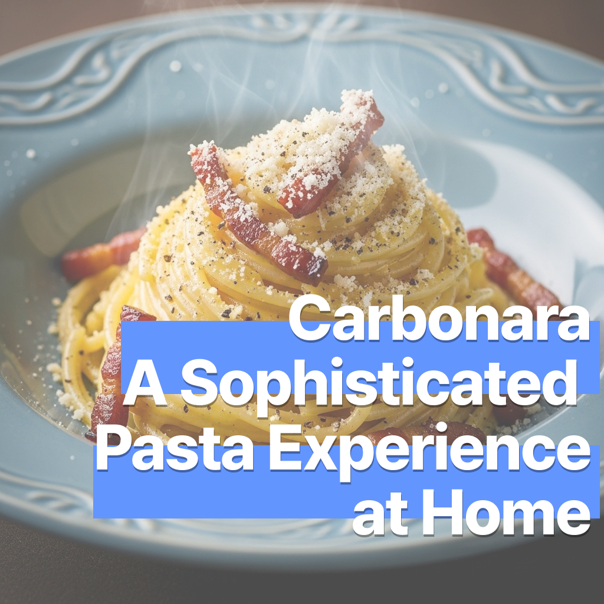

까르보나라 – 집에서 느껴보는 고급 파스타
2025-07-16

까르보나라 – 집에서 느껴보는 고급 파스타
우리 모두 까르보나라의 고급스러움을 알고 있습니다. 하지만 우리는 조금 더 쉽게 다가갈 필요가 있습니다. 계란과 치즈가 만든 크리미함, 그리고 팬체타 또는 베이컨의 감칠맛이 어우러진 고급 파스타. 집에서도 충분히 품격 있는 한 접시를 즐겨볼까요?
🛒 재료 (2인 기준)
- 스파게티 180g
- 팬체타 또는 베이컨 100g
- 계란 노른자 3개
- 파르미지아노 레지아노 또는 페코리노 치즈 40g (갈아 놓은 것)
- 올리브유 1큰술
- 소금 약간 (파스타 삶을 때)
- 후추 약간
🔪 재료 손질
팬체타 또는 베이컨은 작게 썰어 기름이 잘 빠지도록 준비합니다.
치즈는 곱게 갈아두고, 계란 노른자는 넓은 볼에 담아 치즈와 후추와 함께 미리 섞어둡니다.
스파게티는 끓는 물에 소금을 넣고 알덴테(약 8~10분)로 삶습니다.
면을 건져내기 전, 삶은 물을 조금 남겨두세요 (소스 농도 조절용).
👩🍳 만드는 법
- 팬에 올리브유를 두르고 베이컨을 중불에서 바삭하게 볶아 감칠맛을 끌어냅니다.
- 삶은 파스타를 팬에 넣고 베이컨과 잘 섞어줍니다.
- 불을 끈 후 팬을 약간 식혀, 미리 준비한 계란 노른자 + 치즈 + 후추 소스를 넣습니다.
- 빠르게 저어가며 면에 소스를 고루 입혀 크리미한 질감을 만듭니다.
- 팬이 너무 뜨거우면 계란이 스크램블처럼 익을 수 있어요!
- 소스가 너무 뻑뻑하다면 남겨둔 면 삶은 물을 조금씩 넣어 농도를 맞춰주세요.
- 접시에 담고, 치즈와 후추를 추가로 뿌려 마무리하면 품격 있는 까르보나라 완성!
💡 팁
- 반드시 불을 끈 상태에서 소스를 섞어야 고급스러운 부드러움이 살아납니다.
- 치즈는 풍미가 강한 페코리노가 이상적이며, 없을 경우 파르미지아노도 훌륭한 대체.
- 베이컨보다 팬체타를 사용하면 훨씬 진한 정통의 맛을 즐길 수 있어요.
- 마지막에 트러플 오일 한 방울을 더하면 고급 레스토랑 못지않은 분위기 연출 가능.
오늘은 집에서 나만의 품격을 담아볼까요?